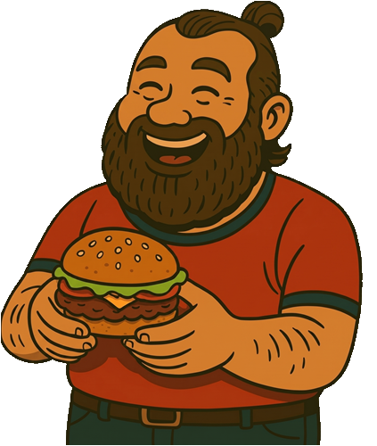
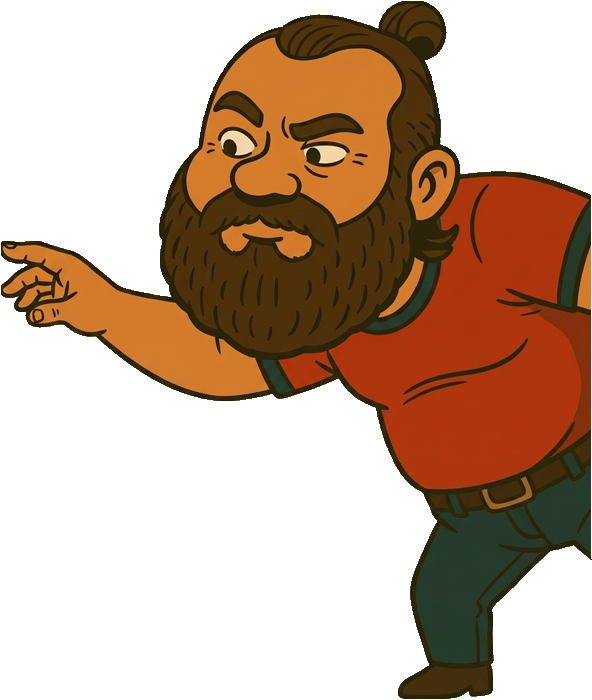
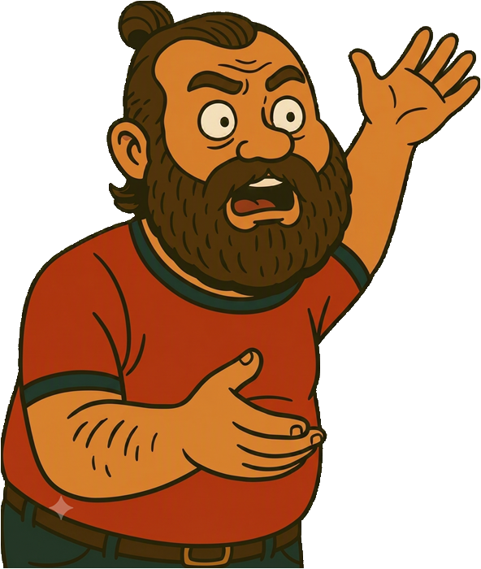
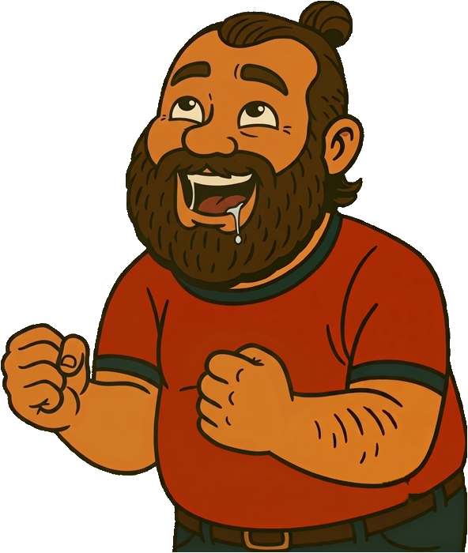
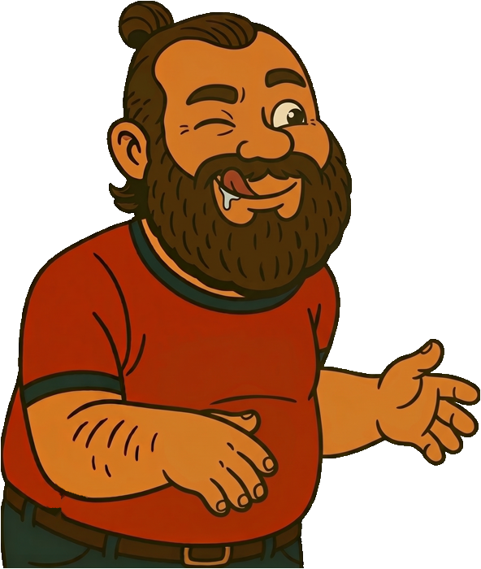
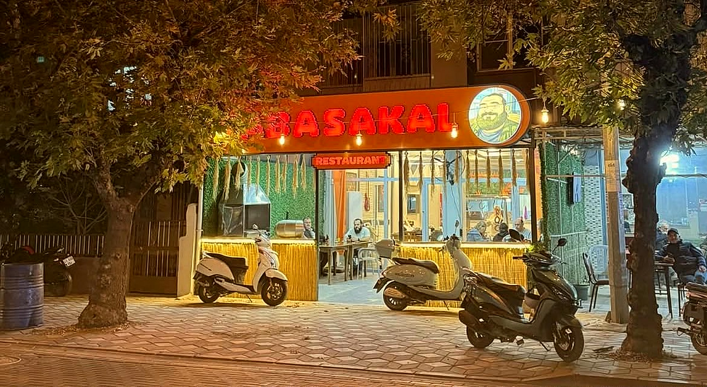

Sıradan bir mönü sayfası değil — burgerin içine girdiğin bir yolculuk. Aşağı kaydır.

[Yer tutucu — fırın/tedarik bilgisi netleşince güncellenecek]
Her siparişte taze kesim. [Gerçek detayla değiştirilecek]
Kabasakal'ın imzası burada. [Gerçek teknik bilgiyle güncellenecek]
[Sos hikayesi — gerçek bilgiyle yazılacak]




Bu bir eğlence testi — hiçbir cevap kaydedilmiyor, gerçek sipariş için mönüden veya iletişim kanallarından devam et.
Bu bir Sade Kabasakal.
Bu sadece eğlenceli bir önizleme — seçimlerin hiçbir yere kaydedilmiyor. Gerçek sipariş için aşağıdaki iletişim kanallarını kullan.
Bunu Söylemek İçin İletişime GeçOnline sipariş kanallarımız çok yakında açılıyor. Şimdilik bizi yerinde ziyaret et: 167. Sokak No:72, Akhisar.

Kabasakal'ın hikâyesi yakında burada. Şimdilik en iyi anlatım tezgâhın başında — gel, közün karşısında dinle.